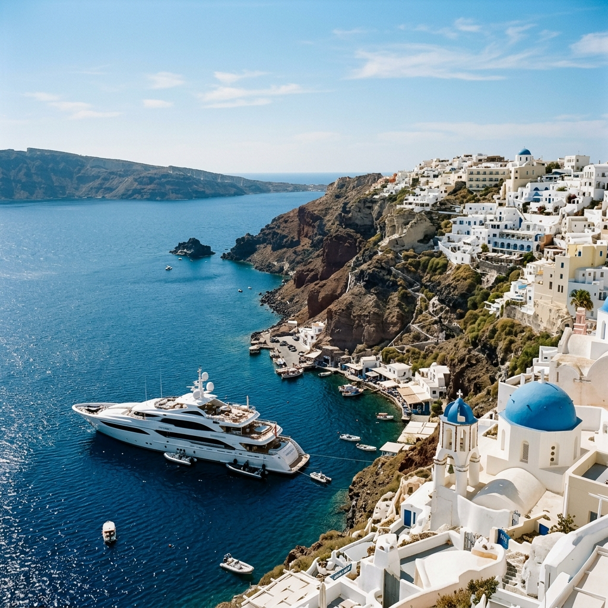

Luxury Yacht Charters in Greece
Explore ancient ruins, secluded anchorages, and whitewashed villages across thousands of islands.

Explore Greece
Embark on a tailor-made journey through the waters of Greece. Whether you're seeking secluded anchorages, vibrant coastal culture, or glamorous ports of call, our curated fleet ensures the ultimate yachting experience. Every itinerary is crafted around your unique desires from start to finish.
Endless Exploration
Explore ancient ruins, secluded anchorages, and whitewashed villages across thousands of islands.
Cruising and Island Hopping
More than 2000 islands make up Greece’s seascape, scattered across miles of coastline far from the mainland. It makes for memorable island hopping and every yacht charter different from the last. Though many islands are remote, some even without vehicles, accessibility by boat is surprisingly easy. Cruising by boat is the best way to discover isolated bays, enjoy picnics in solitude and make the most of water toys away from onlookers. Island hopping allows guests to experience the culture, immerse in the villages and dine on fine delicacies unique to certain areas.
Climate and Endless Summers
Greece offers the best of the Mediterranean climate, with mild winters and dry summers. Yachts typically charter during the summer months of June, July and August, though the bookend months of May and September can prove to be equally as rewarding once the heat has waned and the crowds have departed. Defined by the warm constant winds that blow throughout the year and rocky outcrops that harbor bays and paths ripe for discovery, the many isles sprinkled across the Aegean Sea create mesmeric yachting itineraries.
A Culture to Remember
Dripping in historic importance and renowned for the role it played in the progression of western civilization, Greece has many accolades to its name. From philosophers to Olympians, its culturally diverse lands beg to be explored one island at a time. The windmill island of Mykonos has earned an international reputation for its throbbing nightlife, while the glowing sunsets of Santorini melt hearts and minds. For a taste of Greek mythology, Apollo’s ancient seaside temple in Delos will deliver.
Practical Information
The best time to charter in Greece is between April and October. The peak summer months of July and August bring warm waters and the famously cooling Meltemi winds.
Weekly base rates for crewed motor yachts typically start around €25,000 and can exceed €350,000 for full superyachts. You should also budget an APA (Advance Provisioning Allowance) of 25-40%.
Explore over 2,000 islands! Iconic routes start in Athens or Mykonos, granting access to the pristine Cyclades, while the Ionian Islands to the west offer a gentler pace.
Greece is a member of the Schengen Area, meaning passport-free travel for EU citizens. The Euro is the standard currency, and the summer brings endless dry, sunny days.